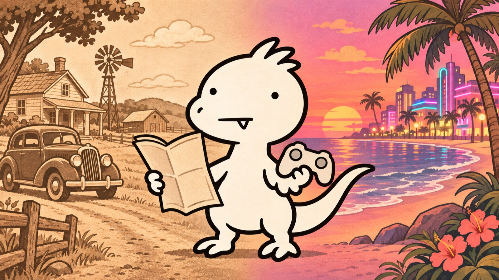
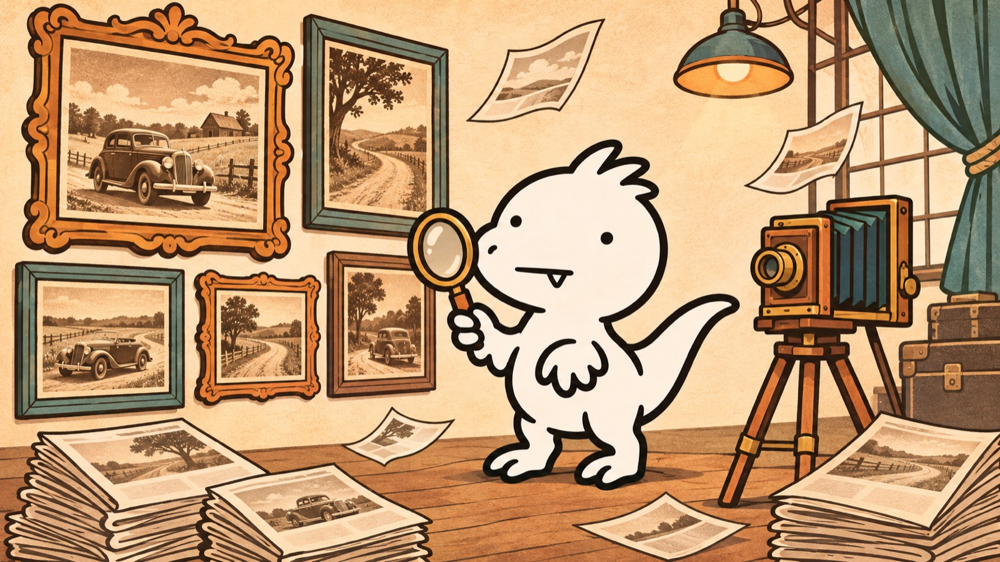
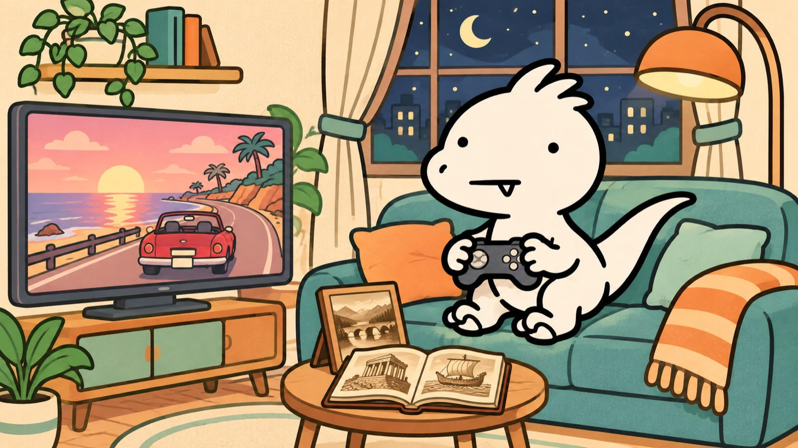

어제(11월 19일) 나온 GTA 6의 두 주인공 루시아와 제이슨. 처음 소식이 나왔을 때부터 따라붙은 꼬리표가 "현대판 보니와 클라이드"였습니다. 그 원조가 누구였는지 5분이면 알 수 있게 정리했습니다. 게임 본편 스포일러는 없습니다.

와우로 치면 보니와 클라이드는 1930년대에 "2인 파티로 레이드 뛰다 전멸한 전설의 길드"입니다. 무용담만 남았지만 실제 공략 로그를 열어 보면 꽤 처참합니다.
학창 시절 글쓰기 상을 받을 만큼 글재주가 있었고, 도피 중에도 시를 썼습니다. 클라이드를 만났을 때 이미 감옥에 간 남편과 결혼한 상태였고, 한 번도 이혼하지 않았습니다.
가난한 소작농 집안 출신으로, 10대 때부터 좀도둑질로 경찰과 엮였습니다. 악명 높은 교도소 농장에서 수감 생활을 한 뒤 "다시는 감옥에 안 간다"는 생각으로 더 거칠어졌다고 전해집니다.
둘은 1930년 1월 텍사스에서 처음 만났습니다. 보니는 19살, 클라이드는 21살이었습니다. 때는 대공황 한복판이었습니다. 은행이 줄줄이 망하고 농가는 빚에 몰리던 시절이어서, 은행을 터는 무법자를 묘하게 응원하는 분위기도 있었습니다.
버튼을 눌러 시점을 바꿔 보세요.

1933년 미주리주 조플린의 은신처에서 경찰이 현상 안 된 필름을 찾아냈습니다. 둘이 장난스럽게 포즈를 잡은 사진이 신문에 실리자 순식간에 전국 스타가 됐습니다. 요즘으로 치면 SNS 바이럴입니다. 그 이미지를 1967년 영화 「우리에게 내일은 없다」(Bonnie and Clyde)가 한 번 더 낭만적으로 굳혔습니다.
그래서 이 글은 둘을 멋진 커플로 띄우려는 게 아닙니다. 피해자가 있는 실화가 어떻게 "멋진 이야기"로 바뀌는지를 알면, GTA 6가 그 공식을 어떻게 비트는지가 보입니다.
GTA 6는 플로리다를 닮은 가상의 주 레오니다(Leonida)와 바이스 시티가 무대입니다. 시리즈 최초로 커플이 함께 주인공을 맡았고, 루시아는 시리즈 첫 여성 주인공입니다. 아래 소개는 Rockstar 공식 사이트 설명을 요약한 것입니다.
걸음마를 떼자마자 아버지에게 싸우는 법을 배웠고, 가족을 위해 싸우다 레오니다 교도소에 갔습니다. 막 출소했고, 이번에는 판을 자기에게 유리하게 바꿀 계획이 있습니다.
그냥 편하게 살고 싶은데 일은 자꾸 꼬입니다. 루시아를 만난 게 인생 최고의 일일지 최악의 일일지 본인도 아직 모릅니다.
| 비교 항목 | 보니 & 클라이드 (1930~34) | 루시아 & 제이슨 (GTA 6) |
|---|---|---|
| 관계 닮음 | 연인이자 범죄 파트너 | 연인이자 범죄 파트너. 트레일러가 두 사람의 관계를 중심에 둠 |
| 배경 닮음 | 대공황. 돈도 일자리도 없던 시대 | 화려하지만 빈부 차가 큰 현대 레오니다 |
| 이미지 닮음 | 신문 사진이 전설을 만듦 | 트레일러에 SNS 영상·뉴스 화면이 많이 등장 |
| 출발점 다름 | 클라이드의 전과와 도피가 중심 | 루시아의 출소와 "계획"으로 시작 |
| 결말 다름 | 1934년 매복으로 사망. 이미 정해진 역사 | 플레이어가 겪어 가며 확인할 이야기 |
| 근거 주의 | 역사 기록 (FBI·사료) | 언론 보도와 트레일러 인상. Rockstar 미확인 |

원조 이야기는 보통 클라이드가 끌고 보니가 따라간 구도로 전해집니다. GTA 6는 출소한 루시아의 계획에서 출발합니다. 장면마다 "지금 핸들을 잡은 사람이 누구지?"를 보면 원조와 다른 점이 선명해집니다.
1933년 조플린 사진이 신문을 타고 퍼졌듯, GTA 6 트레일러는 SNS 영상과 뉴스 화면을 계속 끼워 넣습니다. 두 사람이 사건을 일으킬 때 화면 밖 구경꾼이 그걸 어떻게 소비하는지 보면, 90년 사이 "전설이 만들어지는 방식"이 어떻게 바뀌었는지 보입니다.
커플 범죄 이야기의 진짜 긴장은 총격전이 아니라 서로를 끝까지 믿을 수 있느냐입니다. 원조는 가까운 사람의 제보로 끝났습니다. 신뢰가 흔들리는 장면이 나오면 1934년 5월 23일을 한 번 떠올려 보세요.
이 페이지는 Rockstar Games와 관련 없는 개인 해설입니다. Grand Theft Auto 및 관련 명칭과 상표는 해당 권리자에게 있습니다. 게임 화면이나 공식 아트는 쓰지 않았고, 삽화는 테크텍 캐릭터 벨로키를 AI로 생성한 것입니다.
보니와 클라이드는 실제 피해자가 있는 범죄자입니다. 이 글은 범죄를 미화하려는 것이 아니며, 사망자 수처럼 자료마다 다른 숫자는 확정하지 않고 "여러 명"으로 적었습니다. GTA 6의 보니와 클라이드 연결은 Rockstar가 공식 확인하지 않은 보도 기반 비교입니다.
© 2026 TECHTAEK · 글·삽화 CC BY-NC-ND 4.0 (외부 자료 제외)